始まる前
システム機能、構成など説明資料または紹介動画のリンク
ハードウェアアイテムリスト
V-Sido CONNECT
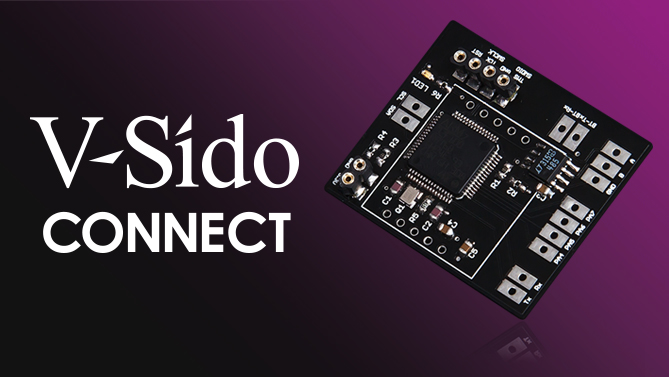
GR-001
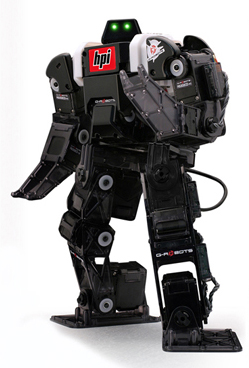
Intel Edison
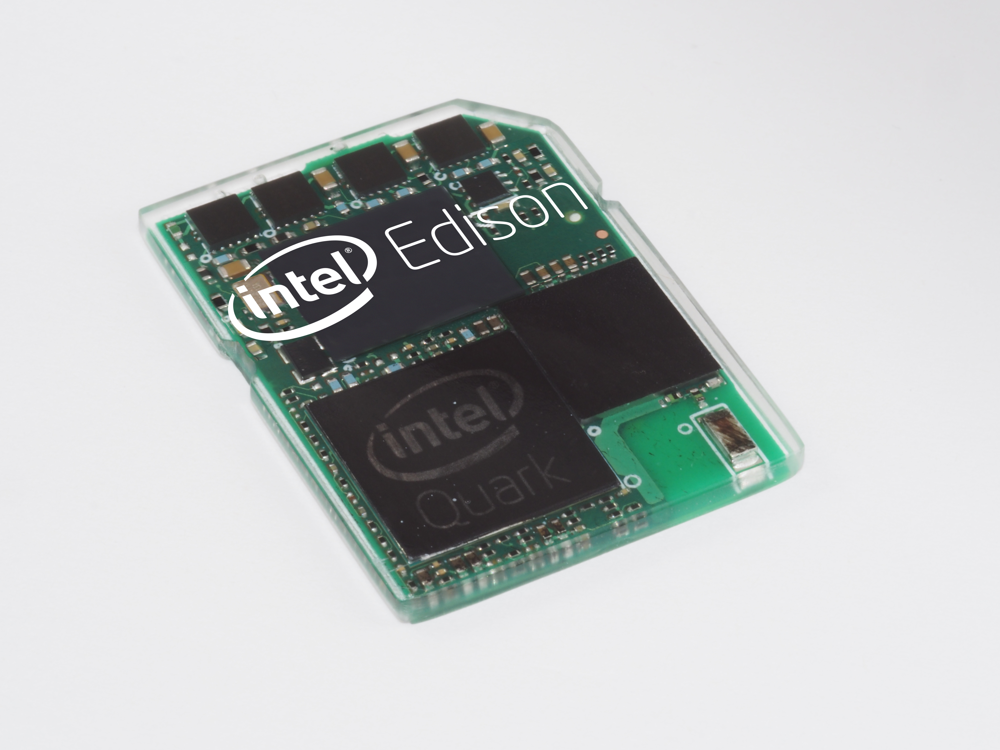
Intel Edison Break Out ボード
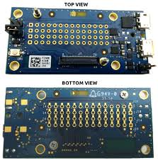
USB microケーブル２本
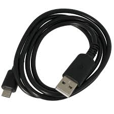
Bluetooth ドングルセット
 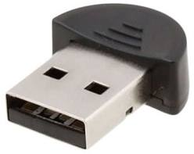
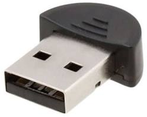
ハードウェアの組立
V-Sido CONNECTとGR-001を接続する
V-Sido CONNECTとBluetoothドングルを接続する
Intel Edison , Break Out ボード , USBケーブルを接続する
ソフトウエアインストール
V-Sido CONNECTはソフトウエア導入済みのため、必要ありません
Intel Edison ファームウェア準備
Edisonボード起動し、シリアルポートの確認をする手順についてはウェブなどをご参照ください
Bluetoothを利用するため、Edisonのファームウェアを最新版にアップデートしてください
動作確認済みFW
アスラテックの用意したサンプルプログラムをインストールしてください
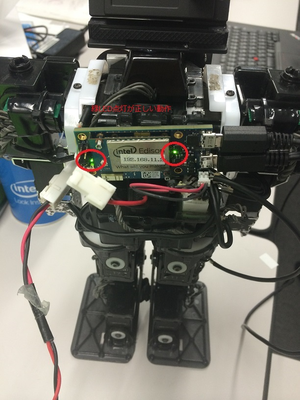
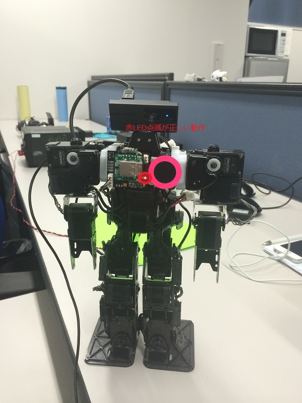
Wifi経由でEdisonボードをインターネットに接続および確認する。
configure_edison --wifi
ping github.com
Edisonのターミナルで下記コマンドを実行してください。
wget --no-check-certificate -O - https://asratec.github.io/VSidoConn4Edison/install.sh | sh
上記マンドの結果を確認します
ls /home/sysroot/
powerffコマンドを打ってから、Intel Edisonの電源を入れ直してください
poweroff
ロボットの動作テスト
１．接続を確認する。
WIFIの接続
★ロボットと開発PCが同じLANにいること。
シリアル通信
カメラ
電源
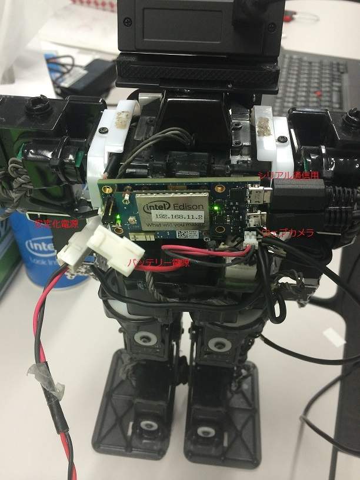
２．電源入れる。
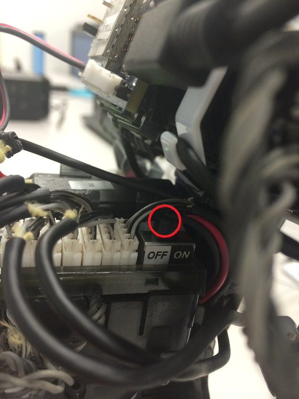
３．ハードウェア正常動作かをLEDの状態で確認する
４．EdisonのIPを確認する。
root@edison:~# ifconfig wlan0
wlan0 Link encap:Ethernet HWaddr fc:c2:de:34:51:c2
inet addr:192.168.11.2 Bcast:0.0.0.0 Mask:255.255.255.0
UP BROADCAST RUNNING MULTICAST MTU:1500 Metric:1
RX packets:1498 errors:0 dropped:0 overruns:0 frame:0
TX packets:1277 errors:0 dropped:0 overruns:0 carrier:0
collisions:0 txqueuelen:1000
RX bytes:116466 (113.7 KiB) TX bytes:108462 (105.9 KiB)
root@edison:~#
５．Bluetoothのペアリングを置かない、V-Sido CONNECTとIntel Edisonと繋ぐ
http://192.168.11.2:8089/connection/index.html
６．ペアリングした後、電源を入れ直す
７．ロボットが動くか確認する。（ステップ２、３、４を確認してください。）
http://192.168.11.2:8088/
ロボットを試すサンプル
サンプルコード。
OHDSample.zip
上記のサンプルを解凍し、中の「ServoAngle.html」においてIPアドレスに編集する。
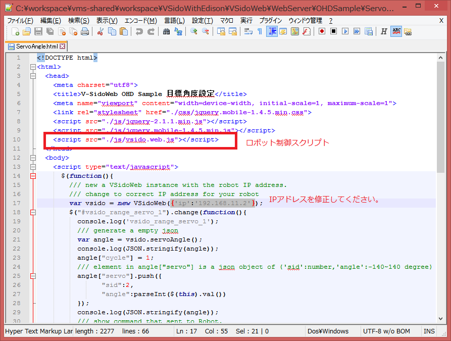
JavaScript API
API
Edisonボード内部サンプルコード
GitHub
★ビルド方法は、Readmeを参考してください。
{kind=link}
{kind=link}
{kind=link}
{kind=link}
{kind=link}
{kind=link}
{kind=link}
{kind=link}
{kind=link}
{kind=link}
{kind=link}